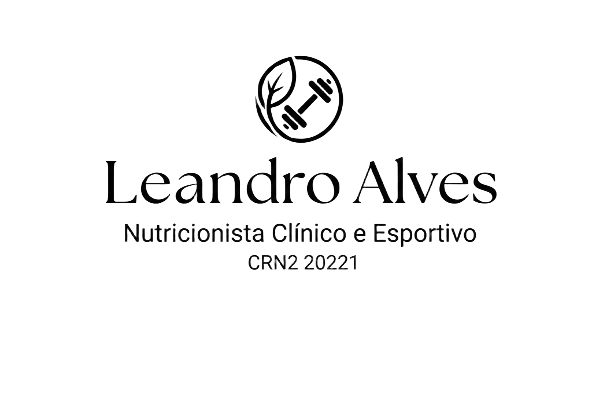

Nutrição Clínica e Esportiva
Especialista em Nutrição Clínica e Nutrição Esportiva, com experiência na saúde do idoso e em doenças crônicas. Consultas online e presenciais em Porto Alegre. Agende sua consulta!
Certificação ISAK
CRN2 20221
Experiência Hospitalar